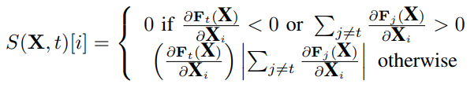

把论文分为攻击、防御、测试、验证、其他几类。
攻击指通过一定的方法设计，生成能够欺骗神经网络的对抗样本。
防御指使神经网络能够抵抗对抗样本的攻击。
测试感觉是软工领域的说法，一般目的是希望生成能够探测到更多神经网络错误的更完备的测试集。
验证是从理论上分析神经网络的安全性，是最困难的领域。
攻击
1.Intriguing properties of neural networks
2014年的论文，第一次提出了对抗样本。即在原始图像中添加了人眼不易发觉的扰动，会造成神经网络分类错误，这是一种非常反直觉的现象，也揭示了神经网络在安全领域中的应用会存在很大的隐患。同时，本文提出了一种生成对抗样本的方法。
首先将生成对抗样本形式化为一个约束优化问题：
\(Minimize \left \| r \right \|_2 subject to:\)
\(1. f(x+r) = l\)
\(2. x+r \in [0, 1]^m\)
\( Minimize c|r| + loss_{f}(x+r, l) subject to x+r \in [0, 1]^m\)
通过L-BFGS算法来进行求解。
这篇论文中还提出了一种观点，神经网络的语义信息是存在于网络中高层单元空间中的，而不是在单独的个体中。因为通过实验发现单独的高层单元个体和随机线性组合的高层单元是没有什么区别的。同时，这篇论文也提出了对抗样本存在移植性，对抗训练等观点。
2.Explaining and Harnessing Adversarial Examples
这篇论文中提出了FGSM算法，即Fast Gradient Sign Method，可以更加快速地生成对抗样本。
生成扰动的具体公式为：
$$\mathbf{\eta} = \epsilon sign(\nabla_{x}J(\mathbf{\theta} , \mathbf{x}, y))$$
这里，$J$是神经网络的损失函数，$y$是输入样本的label，$\eta$是常数调节步长，$\theta$是神经网络模型的参数。
同时，这篇论文也提出了神经网络在对抗样本方面展现的脆弱性主要是因为神经网络的线性性和对抗训练的方法。
这篇论文的FGSM是one step的，后续也提出了迭代的FGSM，可以用来求更近距离的对抗样本。
3.The Limitations of Deep Learning in Adversarial Settings
这篇论文的提出的攻击方法是JSMA，即Jacobian Saliency Map Attack。
首先解释什么是Jacobian Matrix：
神经网络输出的每一维对输出的每一维求导。
然后根据得到的Jacobian Matrix构造对抗显著图（Adversarial Saliency Maps）：

4.Towards Evaluating the Robustness of Neural Networks
CW攻击方法，因为对抗样本求解问题的难度问题，探索尝试新的目标函数和优化方法，并且给出了基于三种范数的攻击。
5.DeepFool: a simple and accurate method to fool deep neural networks
利用直线距离最短的思想，设计优化方法。
6.Practical Black-Box Attacks against Machine Learning
黑盒攻击
7.Universal adversarial perturbations
8.One pixel attack for fooling deep neural networks
防御
1.Distillation as a Defense to Adversarial Perturbations against Deep Neural Networks
2.Adversarial Sample Detection for Deep Neural Network through Model Mutation Testing
ICSE’19
3.Ensemble Adversarial Training: Attacks and Defenses
ICLR’18
Florian Tramèr, Alexey Kurakin, Nicolas Papernot, Ian Goodfellow, Dan Boneh, Patrick McDaniel
测试
1.DeepXplore: Automated Whitebox Testing of Deep Learning Systems
SOSP’17 Best Paper
2.DeepTest: Automated Testing of Deep-Neural-Network-driven Autonomous Cars
ICSE’18
3.DeepGauge: Multi-Granularity Testing Criteria for Deep Learning Systems
ASE’18 Distinguished Paper
4.MODE: automated neural network model debugging via state differential analysis and input selection
FSE’18
5.Testing Deep Neural Networks
6.DeepMutation: Mutation Testing of Deep Learning Systems
7.Combinatorial Testing for Deep Learning Systems
8.DeepRoad: GAN-Based Metamorphic Testing and Input Validation Framework for Autonomous Driving Systems
ASE’18
9.Guiding Deep Learning System Testing using Surprise Adequacy
ICSE’19
10.TensorFuzz: Debugging Neural Networks with Coverage-Guided Fuzzing
验证
1.Safety Verification of Deep Neural Networks
Invited paper at CAV’17
Xiaowei Huang, Marta Kwiatkowska, Sen Wang, Min Wu
2.Reluplex: An Efficient SMT Solver for Verifying Deep Neural Networks
Extended version of a paper with the same title that appeared at CAV 2017
Guy Katz, Clark Barrett, David Dill, Kyle Julian, Mykel Kochenderfer
其他
1.Measuring Neural Net Robustness with Constraints
NIPS’16
2.Evaluating the Robustness of Neural Networks: An Extreme Value Theory Approach
ICLR’18